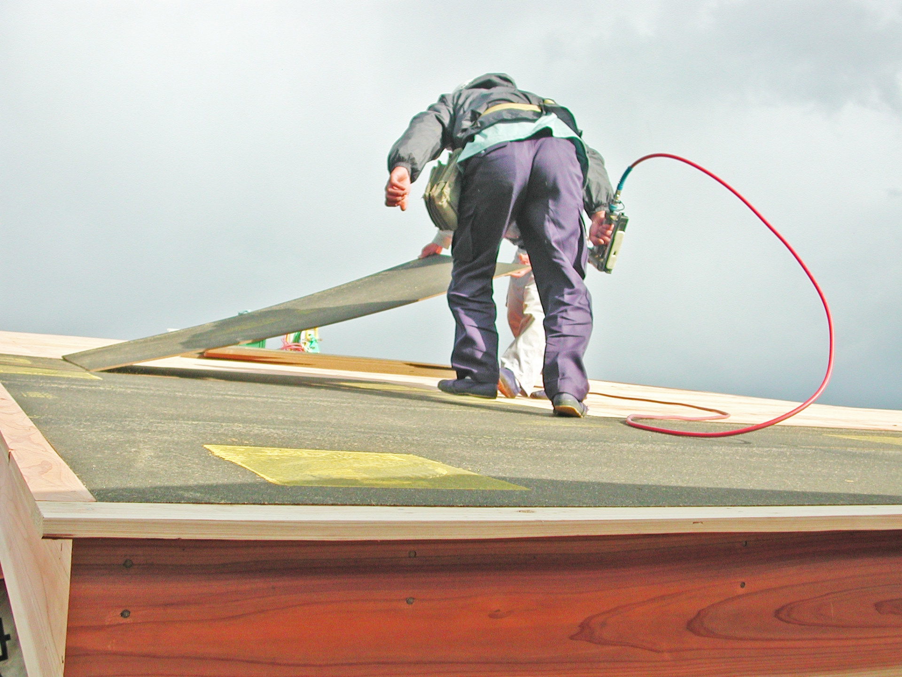
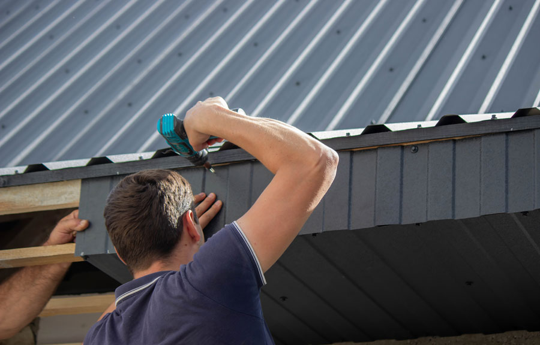

FEATURES
当社の３つの強み

1
どこよりも早い
雨漏り修理
生活に直結する急なトラブルには、誰よりもイチ早く駆けつけることを心がけています。
専門資格に基づく正しい知識で原因を特定し、応急処置から本格修理までスピーディーに完結させます。
※ご都合が合えば即日対応も可能です。

2
業歴30年の
確かな技術力
一級建築板金技能士をはじめとする専門資格を保有し、30年以上の現場経験を持つ代表が自らヒアリング・施工を担当。
「お客様の期待を裏切らない」高品質で確実な工事をご提供します。

3
手厚い自社一貫
アフターケア
お問い合わせから完工、その後のサポートまで自社一貫体制を徹底。
間に業者を挟まないため、お客様の声が現場に直接届きます。
施工後も丁寧な点検を行い、末永い安心をお約束します。